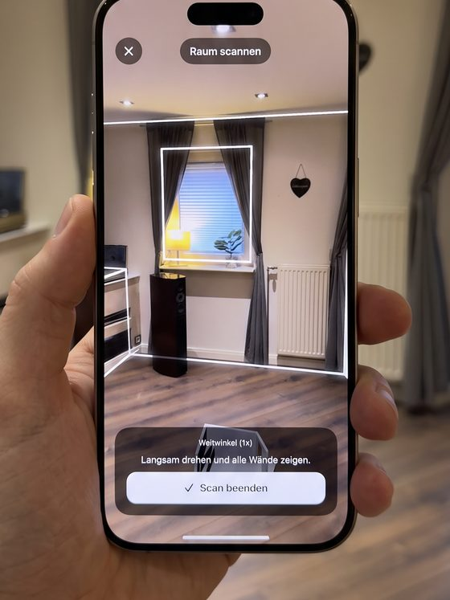
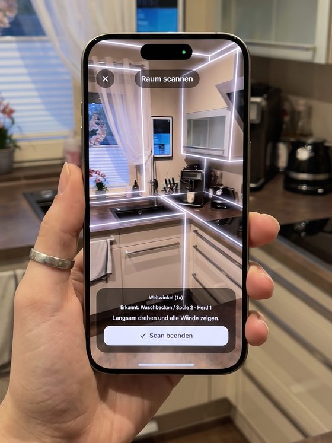
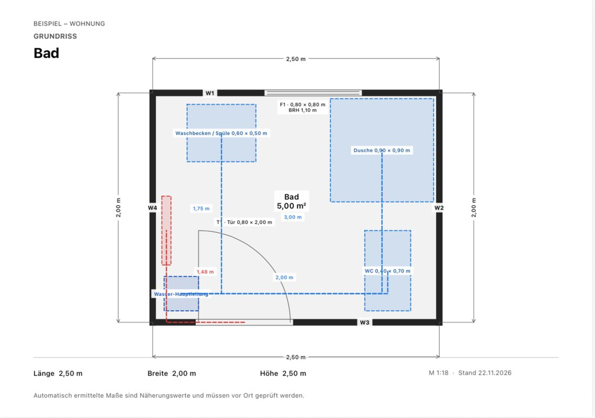
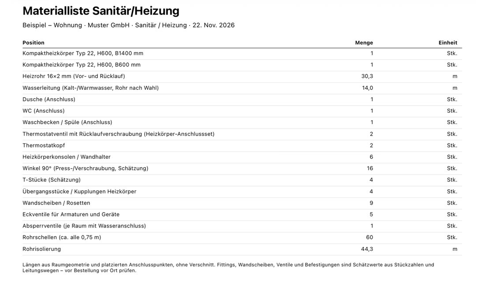
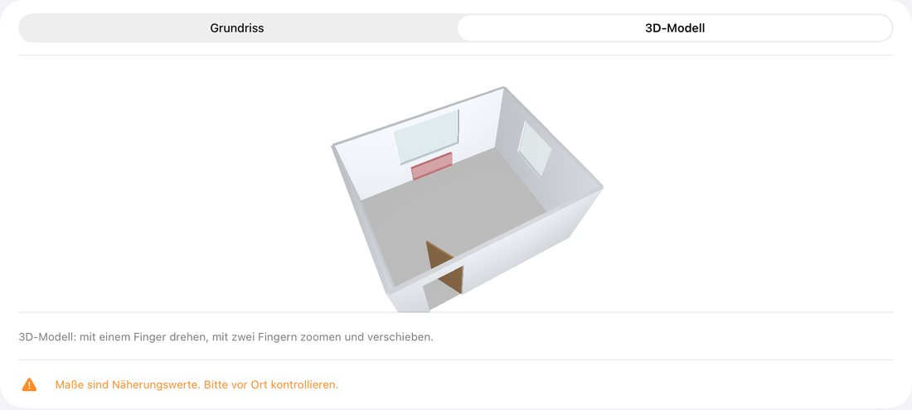

Miss dein Zuhause in Minuten – ohne Zollstock.
Rastivo scannt jeden Raum mit dem LiDAR-Sensor deines iPhones. Du bekommst Grundriss, Flächen und Materialmengen – für die Renovierung zu Hause genauso wie für den Handwerksbetrieb.


Wie viel Farbe, Boden oder Fliesen brauche ich?
Wer renoviert, rät oft: Wie groß ist das Zimmer wirklich, wie viel Wandfläche bleibt nach Türen und Fenstern, wie viele Quadratmeter Boden muss ich kaufen? Rastivo beantwortet das nach einem einzigen Rundgang durch den Raum – und rechnet Verschnitt gleich mit ein.

So einfach geht’s
Scannen
iPhone-Kamera durch den Raum führen. Wände, Türen, Fenster und Möbel werden erkannt.
Prüfen
Falsch erkannte Elemente löschen oder verschieben, Maße bei Bedarf von Hand anpassen.
Auswerten
Grundriss, Flächen und Materialmengen stehen sofort bereit.
Teilen
Als PDF oder Tabelle an Familie, Baumarkt oder Handwerker schicken.
Bessere Angebote – mit richtigen Maßen
Handwerker können nur so genau anbieten, wie du ihnen die Maße nennst. Mit einem bemaßten Grundriss als PDF fragst du Angebote präzise an, vergleichst sie auf gleicher Grundlage und vermeidest Nachforderungen wegen falsch geschätzter Flächen.
Auch praktisch: Passt das Sofa? Wie groß ist die Wohnung wirklich? Was steht beim Umzug oder in der Mietwohnung an Fläche zur Verfügung?

Für Privatpersonen und Profis
Zu Hause
- Renovieren: Farbe, Boden, Tapete, Fliesen
- Umzug und Möbelplanung
- Wohnfläche selbst nachmessen
- Maße für Handwerker-Anfragen
Im Betrieb
- Maler, Bodenleger, Fliesenleger
- Sanitär/Heizung und Elektro
- Rohr- und Kabellängen aus dem Grundriss
- Angebot als PDF mit eigener Preisliste und Firmenkopf
Vom Aufmaß zum fertigen Angebot
Die Auswertung richtet sich nach deinem Gewerk: Flächen, Heizlast, Heizkörper und Rohrlängen für Sanitär/Heizung, Kabel und Ausstattung für Elektro, Fliesenhöhe für Fliesenleger. Profis hinterlegen ihre Preise einmal und erzeugen daraus direkt ein Angebot – inklusive Material, Fittings und Kabeln.

Materialliste mit Fittings und Zubehör
Aus Grundriss und Anschlusspunkten entsteht eine Materialliste: Rohre und Kabel in Metern, dazu Fittings, Wandscheiben, Ventile, Befestigungen und bei Elektro Schalter und Steckdosen. Als PDF, als CSV für Excel oder gleich im Projekt-PDF.



Deine Daten bleiben bei dir
Rastivo braucht kein Konto und sendet keine Projektdaten an uns. Es gibt keine Werbung und kein Tracking. Optional sicherst du deine Daten in einen Ordner deiner Wahl, zum Beispiel in iCloud Drive.
Alle Maße und Berechnungen sind Näherungswerte aus dem LiDAR-Scan und ersetzen weder eine Prüfung vor Ort noch die Berechnung durch einen Fachplaner oder eine Elektrofachkraft. Fotos mit Gerät sind Darstellungen der App-Ansicht.